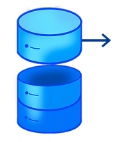

Pour la réalisation de ce site, nous avons utilisé de nombreuses données et ressources.
Pour chacune d'entre-elles vous trouverez ci-après leurs auteurs et liens.
Nous souhaitons aussi remercier les personnes propriétaires de ses données de les avoir mises en accès libre.
Moins de 0,1% des données proviennent de base de données créées par nos moyens.
Le reste provient de bases de données déjà existantes.
|  | Athlètes, |
Données extraites d'une base de données open-source. |
Records |
Données extraites d'une base de données de records olympiques créée par |
|
Anecdotes |
Données extraites d'une base de données d’anecdotes olympiques créée par complétion, grâce aux sources identifiées pour chacune d'elles en bas de l'anecdote. |
|
Éditions |
Données extraites d'une base de données des éditions des JO depuis 1896 créée par complétion, grâce aux données disponibles sur
wikipedia.org (Dates, logo des |
|
Délégations |
Données extraites d'une base de données des codes de toutes les délégations / pays participants aux JO depuis 1896, créée par complétion avec l’import de d’une base |